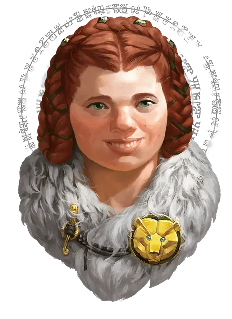

Огрек Брайтхелм
Augrek Brighthelm
Средний Гуманоид (Щитовая дварфийка), законно-добрый, именной НИП

Класс Доспеха 15 (кольчужная рубаха, щит)
Хиты 13 (2к8 + 4)
Скорость 25 футов
| мод | спас | ||
|---|---|---|---|
| СИЛ | 14 | +2 | +2 |
| ЛОВ | 11 | +0 | +0 |
| ТЕЛ | 15 | +2 | +2 |
| мод | спас | ||
|---|---|---|---|
| ИНТ | 10 | +0 | +0 |
| МДР | 11 | +0 | +0 |
| ХАР | 11 | +0 | +0 |
Навыки Атлетика +4, Восприятие +2
Сопротивление урону яд
Чувства тёмное зрение 60 футов, пассивное Восприятие 16
Языки Общий, Дварфийский
Опасность 0
Бонус мастерства +2
Особенности
Дварфская устойчивость. Огрек совершает с преимуществом спасброски от яда.
Информация для отыгрыша. Заместитель шерифа Огрек стоит на страже юго-западных врат Брин Шандера и приветствует посетителей городка. У неё доброе сердце.
Идеал. : «В жизни легче пробиться добрым словом, чем топором.»
Привязанность. : «Брин Шандер - мой дом. Моё дело - защищать его.»
Слабость. : «Я по уши влюблена в Шерифа Саутвелл. Надеюсь, однажды мы поженимся.»
Действия
Боевой молот. . Рукопашная атака оружием: +4 к попаданию, досягаемость 5 фт., одно существо. Попадание: 6 (1к8+2) дробящего урона или 7 (1к10+2) дробящего урона, если использовать молот двумя руками.
Тяжёлый арбалет. . Дальнобойная атака оружием: +2 к попаданию, дистанция 100/400 фт., одна цель. Попадание: 5 (1к10) колющего урона. Огрик носит с собой 10 болтов для арбалета.